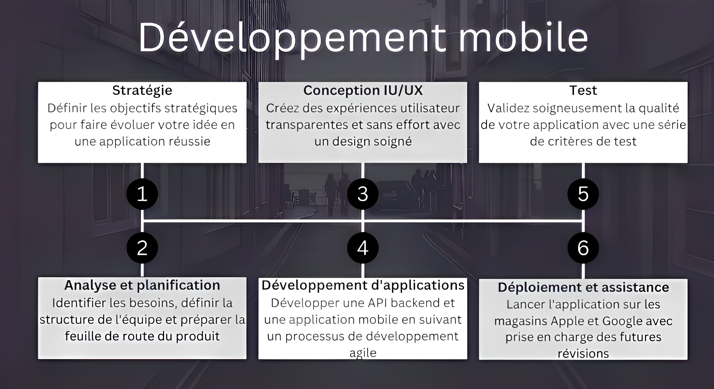

Développement d'applications mobiles
⛛
Utiliser le développement d'applications mobiles pour créer des solutions commerciales intelligentes
Agrandissez et développez votre entreprise via des applications incitatives qui augmentent la distribution et favorisent l'engagement. Éloignez-vous de la concurrence et poursuivez votre parcours de transformation numérique en utilisant la technologie et l'expertise mobiles.
Marques avec lesquelles nous avons travaillé


Qu'est-ce que le développement d'applications mobiles ?
Même si nous avons entendu le terme développement d'applications mobiles des milliers de fois dans nos vies, nous ne pouvons pas élaborer sur le terme développement d'applications mobiles avec une définition appropriée. Si nous parlons de la définition du développement d'applications mobiles; c'est le processus de création de logiciels pour les téléphones mobiles et autres appareils tels que les tablettes, les ordinateurs de bureau, les iPad, etc. Le logiciel peut être préinstallé sur les appareils ou les utilisateurs peuvent l'obtenir en le téléchargeant depuis l'App Store ou les navigateurs mobiles.

Technologies sur lesquelles nous travaillons
Java Script
Fonctionnalités
Kotlin
Fonctionnalités
C#
Fonctionnalités
Python
Fonctionnalités
PHP
Fonctionnalités
Swift
Fonctionnalités
Objective C
Fonctionnalités
Java
Fonctionnalités
HTML 5
Fonctionnalités
Ruby
Fonctionnalités
Processus que nous suivons

Coût de développement d'applications mobiles

Qui devrait faire partie de l'équipe de développement d'applications mobiles ?
• Chaque idée d'application mobile a un propriétaire de produit. Le propriétaire du produit peut être la personne qui a proposé l'idée, dans de nombreux cas, il s'agit d'un individu, mais parfois il peut s'agir d'une équipe d'individus qui ont proposé l'idée et ont aidé au processus de remue-méninges. Le propriétaire du produit est responsable de fournir des informations précises sur les caractéristiques, les fonctionnalités et le fonctionnement de l'ensemble de l'application mobile à l'équipe de développement de l'application.
Analyste d'affaires
• Un analyste commercial ou BA est une personne qui enquêtera sur les conditions préalables de l'entreprise et aidera à définir les bons objectifs afin que la manière de gérer le développement soit idéale pour votre idée d'application exceptionnelle. En particulier, un BA dirigera l'exposition pour comprendre votre idée d'application, répartira les prérequis pratiques et non utiles, obtiendra le coût de développement estimé du projet et aidera au prototypage d'une interface intuitive. Avec tout pris en compte, les BA sont une partie importante de l'équipe de développement d'applications. Ils se souviennent généralement de l'estime de l'entreprise, examinent sans cesse le processus de développement et aident les clients à atteindre les objectifs dont ils ont parlé dès le départ.
Chef de projet
• Un chef de projet ou un PM est chargé de gérer l'ensemble du projet de développement d'applications mobiles et de garantir qu'il dispose de chacune des caractéristiques et fonctionnalités finalisées, terminées à temps dans le cadre du plan financier et de la qualité établis. Le chef de projet est chargé de maintenir le processus de développement de l'application fluide et précis.
Concepteur UI/UX
• Un concepteur UI/UX est une autre partie importante du processus de développement d'applications mobiles. Cette personne est celle qui rendra votre produit final instinctif, facile à utiliser et séduisant. Ils concevront chaque fonction de votre application mobile et s'assureront en même temps que tout ce qui se trouve à l'intérieur de l'application est amélioré pour offrir la meilleure expérience utilisateur pour un engagement accru de l'utilisateur.
Ingénieur QA
• Enfin, un Ingénieur Assurance Qualité ou un Spécialiste QA, ou tout simplement Testeur, est celui qui assure le fonctionnement de votre application mobile. Il s'agit d'un expert qui, comme son nom l'indique, est garant de la qualité de votre application mobile. Par conséquent, un ingénieur QA garantit que votre application fonctionne bien sans aucun bogue, se configure avec différents appareils et plates-formes et répond dans l'ensemble à toutes les nécessités.
Développeur d'applications mobiles
• Vient ensuite le développeur d'applications mobiles. Les développeurs sont des individus qui transforment tous les formats UI/UX en une application mobile fonctionnelle. Par conséquent, ils doivent savoir comment travailler avec les frameworks que vous avez choisis, les langages et même les outils tiers multiplateformes. Le développeur d'applications mobiles peut être une équipe de développeurs en fonction des exigences de votre projet. Vous pouvez embaucher une équipe de développeurs d'applications composée de divers développeurs tels que des développeurs d'applications iPhone, des développeurs d'applications Android, des développeurs front-end, des développeurs back-end, etc., en fonction des exigences de votre projet.